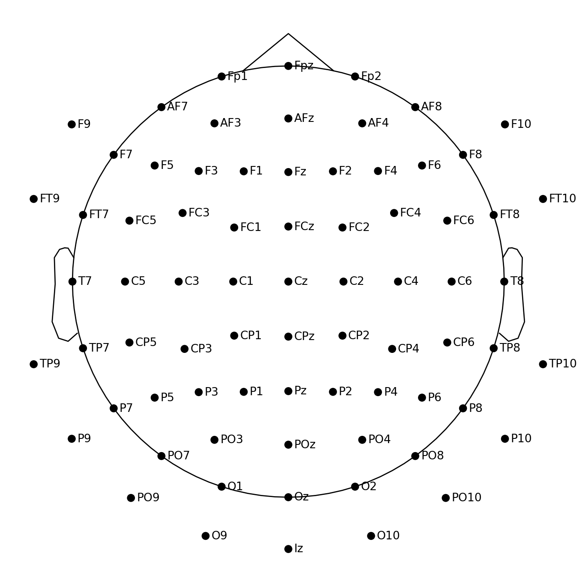

import mneImporting EEG data
Python
MNE
EEG
Python is an extremely popular programming language, and the scientific Python community has created a striving ecosystem of neuroscience tools. Among these, MNE is a popular EEG/MEG package, which offers almost anything required in an EEG processing pipeline. In this post, I show how to import EEG data sets and how to view and edit associated meta data.
Introduction
MNE is the most popular Python package for EEG/MEG processing at the moment. It offers a wide variety of useful tools and methods such as reading and writing various file formats, temporal and spatial filtering, independent component analysis (ICA), forward modeling, inverse solutions, time-frequency decompositions, visualization, and more. In fact, if you are familiar with EEGLAB you might find that you can perform many similar analyses with Python and MNE. In this post, I will show how to import EEG data sets as well as view and edit associated meta data.
Prerequisites
The first step in almost any EEG processing pipeline is importing the raw data files. There are many different file formats for storing EEG data, mostly because every amplifier manufacturer uses its own data format. For example, BrainProducts amplifiers store data as an EEG/VHDR/VMRK file triplet, BioSemi amplifiers create BDF files (an extension of the European Data Format), Neuroscan amplifiers use proprietary CNT files, and so on. Luckily, MNE comes with support for many popular EEG file formats (see here for a selection of supported formats).
The EEG motor movement/imagery data set we will use in this tutorial was contributed to the public domain by the developers of the BCI2000 system. In brief, they recorded 64-channel EEG from over 100 participants during motor execution and motor imagery tasks. In this tutorial, we will analyze only one participant and only one motor imagery run. If you want to follow along, go ahead and download run 4 of subject 1. All subsequent commands assume that this file is located in the current working directory.
Note
MNE has a dedicated loader mne.datasets.eegbci.load_data() for this data set, which makes it even easier to work with particular subjects and runs.
Now that we have selected our data, it is time to fire up Python. I recommend IPython as an enhanced interactive Python shell (go ahead and read the article on how to set up Python for EEG analysis if you do not have a working Python environment yet). You can start IPython from a terminal by typing ipython.
We want to use the MNE package, so we have to import it:
You can check the version of MNE as follows (make sure you always use the latest version):
mne.__version__'1.8.0'Importing EEG data
Importing EEG data works as follows. First, we need to know the file type of the file we want to load. In our case, the data is stored in an EDF file called S001R04.edf. Second, Python needs to know exactly where this file is located. We can either specify the full path to the file, or we can make sure that the file is in the current working directory, in which case the file name alone is sufficient. In this case, we can use the following command to import the raw data:
raw = mne.io.read_raw_edf("S001R04.edf", preload=True)The argument preload=True means that MNE performs the actual loading process immediately instead of the default lazy behavior. Also note that there are many more reader functions available in the mne.io package, including mne.io.read_raw_bdf(), mne.io.read_raw_brainvision(), mne.io.read_raw_cnt(), and mne.io.read_raw_eeglab().
Tip
I am not showing the output that is generated during the loading process here. Usually, it contains some more or less useful logging messages, so if anything goes wrong make sure to carefully study these messages. If you don’t want to see informative messages, you can suppress them as follows:
mne.set_log_level("WARNING")Putting this line right after import mne will instruct MNE to only print warnings and errors. Throughout my posts, this is the setting that I will use.
Meta data
The previous assignment generated an mne.io.Raw object called raw in our workspace. This object holds both the EEG and associated meta data. We can get some basic information by inspecting this object in the interactive Python session:
raw<RawEDF | S001R04.edf, 64 x 20000 (125.0 s), ~9.8 MB, data loaded>We can see the file name, the number of channels and sample points, the length in seconds, and the approximate size of the data in memory.
The info attribute
We can dig deeper into the meta data by inspecting the info attribute associated with raw:
raw.info<Info | 8 non-empty values
bads: []
ch_names: Fc5., Fc3., Fc1., Fcz., Fc2., Fc4., Fc6., C5.., C3.., C1.., ...
chs: 64 EEG
custom_ref_applied: False
highpass: 0.0 Hz
lowpass: 80.0 Hz
meas_date: 2009-08-12 16:15:00 UTC
nchan: 64
projs: []
sfreq: 160.0 Hz
subject_info: 3 items (dict)
>There are seven non-empty values in this attribute. For example, the line chs: 64 EEG near the top of the output tells us that there are 64 EEG channels (the first few channel names are listed in the line starting with ch_names). Individual elements of raw.info can be accessed with dictionary-like indexing. For example, the sampling frequency is available as:
raw.info["sfreq"]160.0Other useful info keys are:
"bads": A list of bad (noisy) channels which should be ignored in further analyses. Initially, this list is empty (as in our example), but we will manually populate it in another post."ch_names": A list of channel names."chs": A detailed list of channel properties, including their types (for example,"EEG","EOG"or"MISC")."highpass"and"lowpass": Highpass and lowpass edge frequencies that were used during recording."meas_date": The recording date (adatetime.datetimeobject).
Renaming channels
The output of raw.info revealed that some channel names are suffixed with one or more dots. Since these are non-standard names, let’s rename the channels by removing all trailing dots:
raw.rename_channels(lambda s: s.strip("."))
Note
In general, methods in MNE modify objects in place. In addition, most methods also return the (modified) object, which allows for chaining multiple methods.
Assigning a montage
For good measure (and for later use), we can assign a montage to the data (a montage relates channels names to standardized or actual locations on the scalp surface). First, let’s list all montages that ship with MNE:
mne.channels.get_builtin_montages()['standard_1005',
'standard_1020',
'standard_alphabetic',
'standard_postfixed',
'standard_prefixed',
'standard_primed',
'biosemi16',
'biosemi32',
'biosemi64',
'biosemi128',
'biosemi160',
'biosemi256',
'easycap-M1',
'easycap-M10',
'easycap-M43',
'EGI_256',
'GSN-HydroCel-32',
'GSN-HydroCel-64_1.0',
'GSN-HydroCel-65_1.0',
'GSN-HydroCel-128',
'GSN-HydroCel-129',
'GSN-HydroCel-256',
'GSN-HydroCel-257',
'mgh60',
'mgh70',
'artinis-octamon',
'artinis-brite23',
'brainproducts-RNP-BA-128']According to the data set documentation, the channel locations conform to the international 10–10 system. MNE does not seem to ship a 10–10 montage, but easycap-M1 contains template locations from the extended 10–20 system:
montage = mne.channels.make_standard_montage("easycap-M1")
montage.plot(sphere="eeglab")
It looks like this montage contains all channels except for T9 and T10, so let’s remove these two channels from our data:
raw.drop_channels(["T9", "T10"])Now we can assign the montage to our raw object:
raw.set_montage(montage, match_case=False)If we wanted to keep channels T9 and T10, we would have to use a montage which includes these channels. This is not possible out of the box and requires some manual steps, which we will not discuss in this post.
Re-referencing
The data documentation does not mention any reference electrode, but it is safe to assume that all channels are referenced to some standard location such as a mastoid or the nose. Often, we want to re-reference EEG data to the so-called average reference (the average over all recording channels). In MNE, we can compute average referenced signals as follows:
raw.set_eeg_reference("average")Annotations
Finally, many EEG data sets come with discrete events, either in the form of an analog stimulation channel or discrete annotations. Our example data set contains annotations that can be accessed with the annotations attribute:
raw.annotations<Annotations | 30 segments: T0 (15), T1 (8), T2 (7)>We see that there are 30 annotations in total. There are three kinds of annotations named T0, T1, and T2. According to the data set description, T0 corresponds to rest, T1 corresponds to motion onset of the left fist, and T2 corresponds to motion onset of the right fist.
If you encounter a file with an analog stimulation channel (this is typically the case for data recorded with BioSemi amplifiers), you need to extract discrete events from this channel as a first step. The mne.find_events() function converts information contained in an analog stimulation channel to a NumPy array of shape (N, 3), where N is the number of detected events. The first column contains event onsets (in samples), whereas the third column contains (integer) event codes. The second column contains the values of the stimulation channel one sample before the detected events (this column can usually be ignored).
This NumPy array can be converted to an Annotations object using mne.annotations_from_events(), which is often necessary for further analyses (note that you can associate an existing Annotations object with a Raw object by calling the raw.set_annotations() method).
In the next post, I will demonstrate how to visualize this data set and how to interactively mark bad channels and bad segments.
Code
Code
import mne
raw = mne.io.read_raw_edf("S001R04.edf", preload=True)
raw.rename_channels(lambda s: s.strip("."))
montage = mne.channels.make_standard_montage("easycap-M1")
raw.drop_channels(["T9", "T10"])
raw.set_montage(montage, match_case=False)
raw.set_eeg_reference("average")